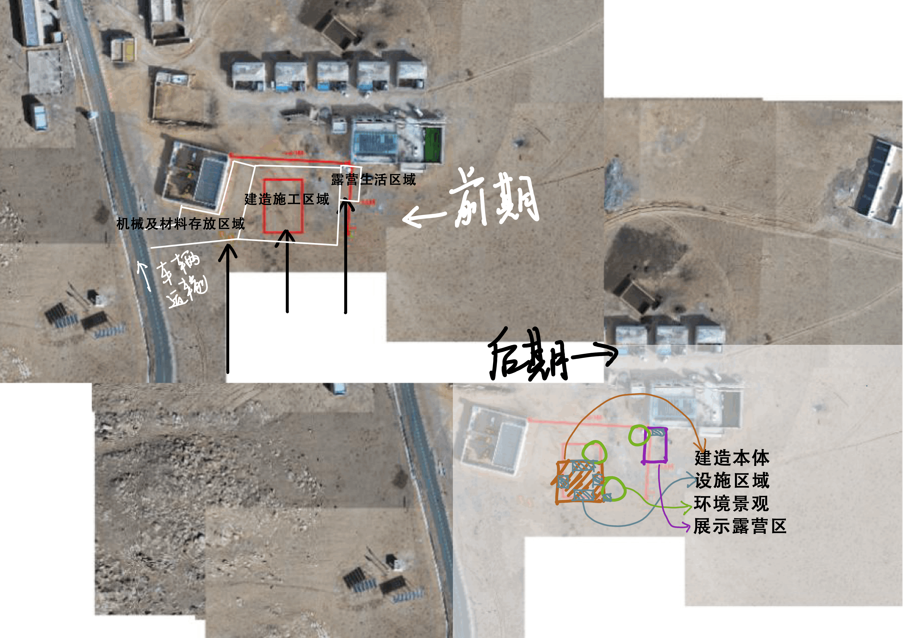
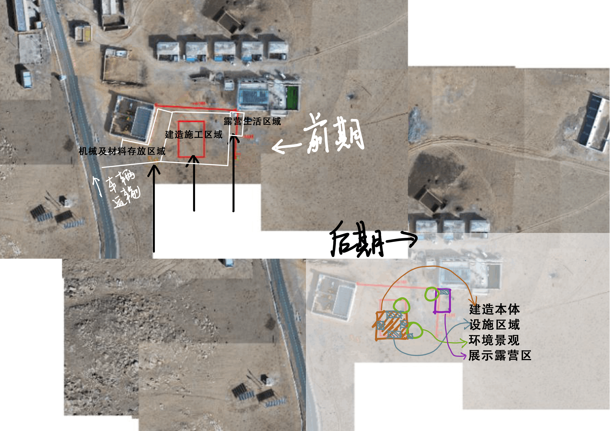
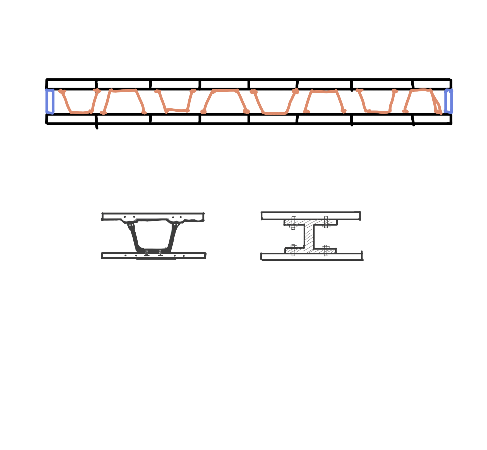

1、场地选择：新村委会南侧空地
2、工地平面功能区域划分
前期 -三部分： 建造施工区域、机械及材料存放区域、露营生活区域； -连接： 道路交通+施工规划线路+生活移动路线。
后期 -四部分：建造本体+设施区域+环境景观+展示露营区； -连接：住宅交通+环境交通。
01520104 陈雅倩
1、场地选择：新村委会南侧空地
2、工地平面功能区域划分
前期 -三部分： 建造施工区域、机械及材料存放区域、露营生活区域； -连接： 道路交通+施工规划线路+生活移动路线。
后期 -四部分：建造本体+设施区域+环境景观+展示露营区； -连接：住宅交通+环境交通。

1、西侧坡道拆除，可将废弃材料建造为挡风墙
2、基座空心处设施宝库：
-用水系统：水源储水、净水+废水储水+水运输管道； -用电系统：光伏板储能+连接建筑室内电线管道。

类型：箱型基础(?)
基座构件拆解
尺寸数据-单位：米 （暂定
-保温防水侧板：1.2*3*0.17； -UHPC顶板+底板：3*3*0.2； -箱型UHPC梁：不确定
